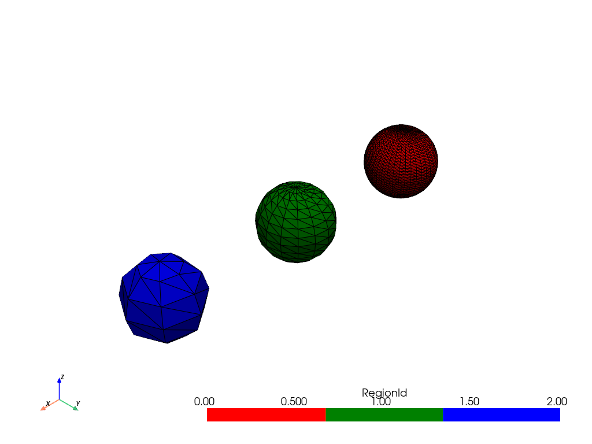
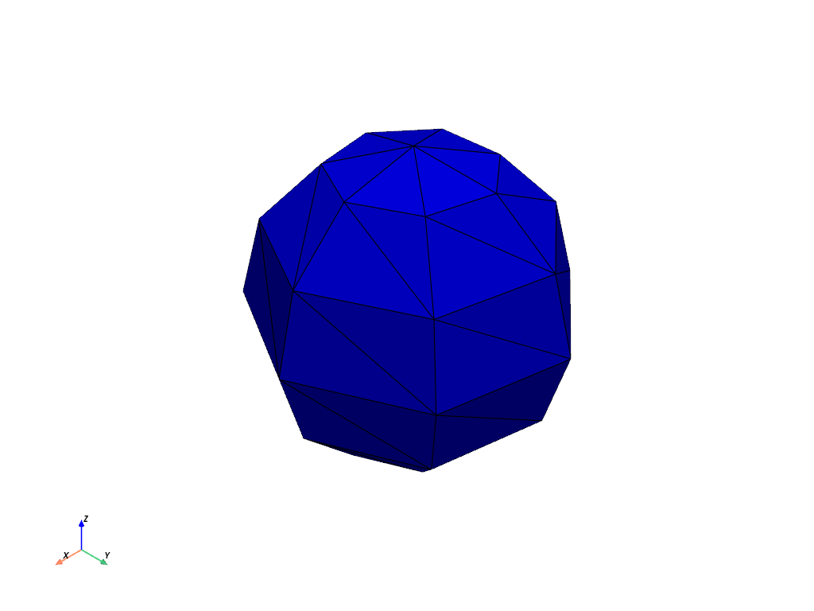
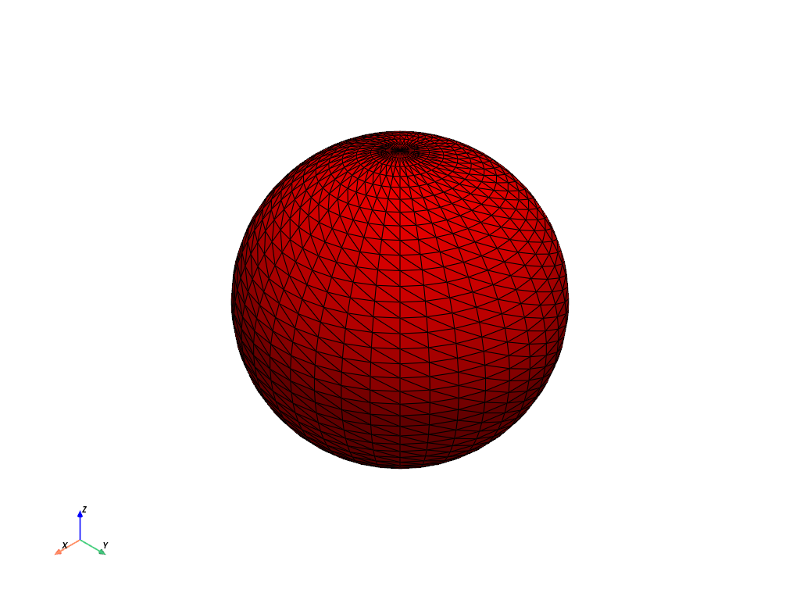

pyvista.DataSetFilters.connectivity#
- DataSetFilters.connectivity(extraction_mode: Literal['all', 'largest', 'specified', 'cell_seed', 'point_seed', 'closest'] = 'all', variable_input=None, scalar_range=None, scalars=None, label_regions=True, region_ids=None, point_ids=None, cell_ids=None, closest_point=None, inplace=False, progress_bar=False, **kwargs)[ソース]#
接続された領域を検索し，ラベル付けします．
このフィルタは指定された接続性の基準に基づいてセル領域を抽出します．抽出基準は
extraction_modeで制御することができ，例えば最大の領域を抽出したり，シードポイントに最も近い領域を抽出したりすることができます．一般的に，セルは点を共有していればつながっているとみなされます．しかし，
scalar_rangeが指定された場合、セルが接続されているとみなされるには，指定された範囲内のスカラー値を持つ点が少なくとも1つ必要です．このフィルターを使用したその他の例については， 連結度 と 連結度 を参照してください．
バージョン 0.43.0 で追加:
新しい抽出モード:
'specified'，'cell_seed'，'point_seed'，'close'．抽出された領域は，セル数の降順でソートされるようになりました．
領域の連結性は
scalar_rangeを使用して制御できます．
バージョン 0.43.0 で非推奨: パラメータ
largestは非推奨です．代わりに'largest'またはextraction_mode='largest'を使用してください．- パラメータ:
- extraction_mode
str, default: "all" 'all': 接続されたすべての領域を抽出します．'largest': (セル数で)最大の連結領域を抽出します．'specified': 特定の領域IDを抽出します．領域IDを抽出するにはregion_idsを使用する．'cell_seed': 指定したセルIDを共有するすべての領域を抽出します．セルIDを指定するにはcell_idsを使います．'point_seed': 指定したポイントIDを共有するすべての領域を抽出します．ポイントIDを指定するにはpoint_idsを使います．'closest':指定した点に最も近い領域を抽出します．点を指定するにはclosest_pointを使用する．
- variable_input
float| sequence[float],optional extraction_modeの値に必要な入力値を指定するための便利なパラメータです．variable_inputを設定することは以下を設定することと同じです:'region_ids'モードが'specified'の場合．'cell_ids'モードが'cell_seed'の場合．'point_ids'モードが'point_seed'の場合．'closest_point'モードが'closest'の場合．
モードが
'all'または'largest'の場合は効果がありません．- scalar_rangesequence[
float],optional [min, max]形式のスカラー範囲．設定された場合，接続性は指定された範囲内のスカラー値を持つ点を少なくとも1つ持つセルに制限されます．- scalars
str,optional scalar_rangeが指定された場合に使用するスカラーの名前．デフォルトは現在アクティブなスカラーです．注釈
このフィルタは領域の連結性を決定するために点スカラーを必要とします．セルスカラーが提供された場合，それらはフィルタを適用する前にまず
cell_data_to_point_data()によって点スカラーに変換されます．変換された点スカラーはフィルタを適用した後に出力から取り除かれます．- label_regionsbool, default:
True もし
Trueなら，'RegionId'点とセルのスカラー配列が格納されます．各領域には一意の ID が割り当てられます．IDはゼロインデックスで，領域のセル数の降順で割り当てられます (つまり，最大の領域はID0を持ちます) ．- region_idssequence[
int],optional 抽出する領域ID．
extraction_modeがspecifiedの場合のみ使用されます．- point_idssequence[
int],optional シードとして使用するポイントID．
extraction_modeがpoint_seedの場合のみ使用されます．- cell_idssequence[
int],optional シードとして使用するセルID．
extraction_modeがcell_seedの場合のみ使用されます．- closest_pointsequence[
int],optional ポイント座標を
(x, y, z)で表します．extraction_modeがclosestの場合のみ使用されます．- inplacebool, default:
False もし
Trueならメッシュはインプレースで更新され，そうでなければコピーが返されます．入力タイプがpyvista.PolyDataまたはpyvista.UnstructuredGridでない場合は，常にコピーが返されます．- progress_barbool, default:
False プログレスバーを表示します．
- **kwargs
dict,optional 非推奨パラメータの処理に使用されます．
- extraction_mode
- 戻り値:
pyvista.DataSetラベル付き連結体を持つデータセット．戻り値の型は，入力の型が
pyvista.PolyDataの場合はpyvista.PolyData，そうでない場合はpyvista.UnstructuredGridです．
例
各領域のセル数は異なります．3つの切り離された領域を持つ単一のメッシュを作成します．
>>> import pyvista as pv >>> large = pv.Sphere( ... center=(-4, 0, 0), phi_resolution=40, theta_resolution=40 ... ) >>> medium = pv.Sphere( ... center=(-2, 0, 0), phi_resolution=15, theta_resolution=15 ... ) >>> small = pv.Sphere( ... center=(0, 0, 0), phi_resolution=7, theta_resolution=7 ... ) >>> mesh = large + medium + small
接続性をプロットします．
>>> conn = mesh.connectivity('all') >>> conn.plot(cmap=['red', 'green', 'blue'], show_edges=True)
 接続をスカラー範囲に制限します．
>>> mesh['y_coordinates'] = mesh.points[:, 1] >>> conn = mesh.connectivity('all', scalar_range=[-1, 0]) >>> conn.plot(cmap=['red', 'green', 'blue'], show_edges=True)
原点に最も近い領域を抽出します．
>>> conn = mesh.connectivity('closest', (0, 0, 0)) >>> conn.plot(color='blue', show_edges=True)
 セルID
100をシードとして領域を抽出します．>>> conn = mesh.connectivity('cell_seed', 100) >>> conn.plot(color='green', show_edges=True)
最大の領域を抽出します．
>>> conn = mesh.connectivity('largest') >>> conn.plot(color='red', show_edges=True)
 領域IDを指定して，最大と最小の領域を抽出します．入力には3つの領域がありますが，出力には2つしかないので，出力の領域IDは指定されたIDとは異なることに注意してください．
>>> large_id = 0 # largest always has ID '0' >>> small_id = 2 # smallest has ID 'N-1' with N=3 regions >>> conn = mesh.connectivity('specified', (small_id, large_id)) >>> conn.plot(cmap=['red', 'blue'], show_edges=True)